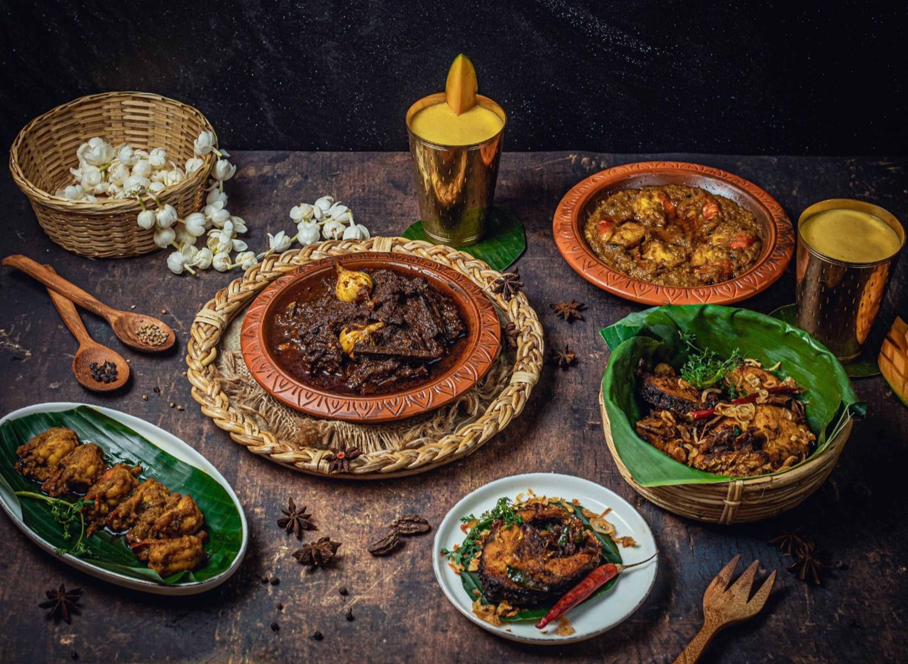
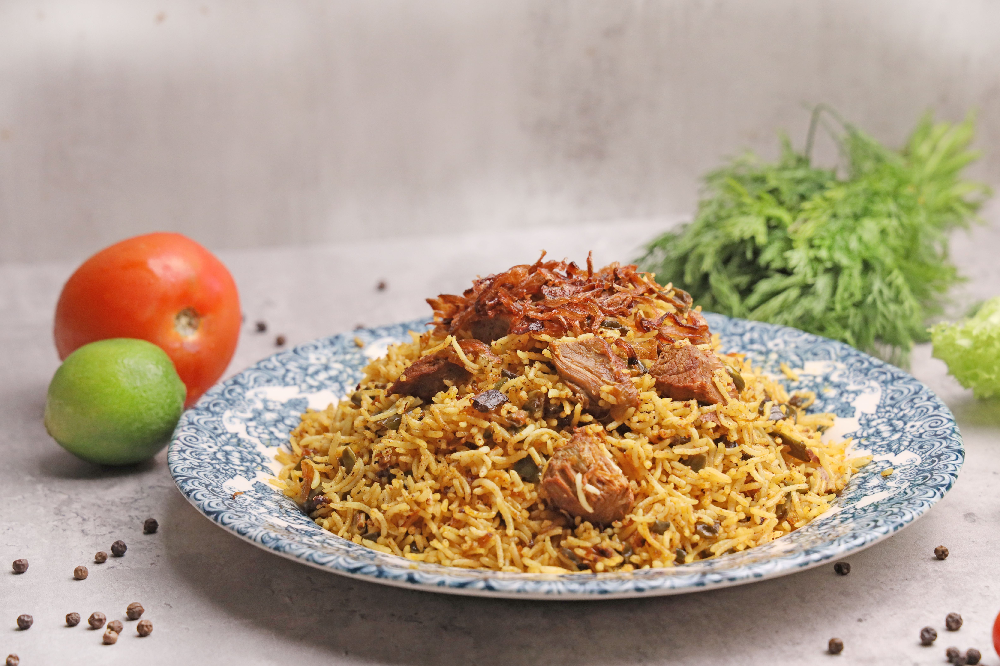
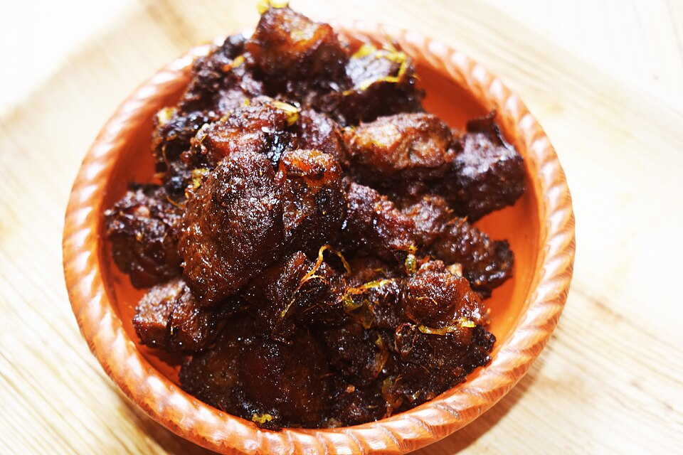
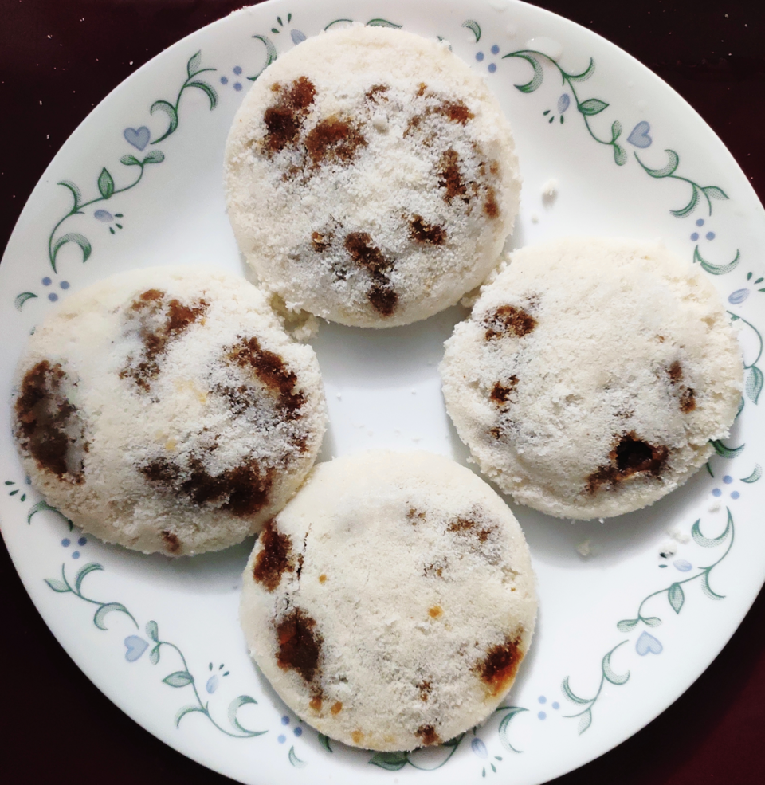

AUTHENTIC BANGLADESHI FLAVORS
Experience the rich flavors of Bangladesh, prepared with love and served with tradition.
Explore Our Menu
Years of
Tradition
WELCOME TO NOKSHI
At Nokshi, every meal tells a story. We bring the rich culinary heritage of Bangladesh to your table through authentic recipes, fresh ingredients, and the warmth of traditional hospitality.
From aromatic Kacchi Biriyani to comforting Bhorta and homemade Pitha, every dish is prepared with care to create a memorable dining experience.
Discover Our Story →OUR SIGNATURE FLAVORS
A small taste of the authentic flavors waiting for you at Nokshi.

PopularFragrant basmati rice, tender mutton, potatoes, and traditional spices.

Slow-cooked beef prepared with aromatic spices in a rich traditional gravy.

SeasonalSoft steamed rice cakes filled with coconut and sweet date-palm jaggery.
THE NOKSHI EXPERIENCE
Traditional flavors prepared with recipes inspired by generations of Bangladeshi cooking.
Carefully selected ingredients bring freshness and quality to every dish.
A welcoming atmosphere where every guest is treated like part of our family.